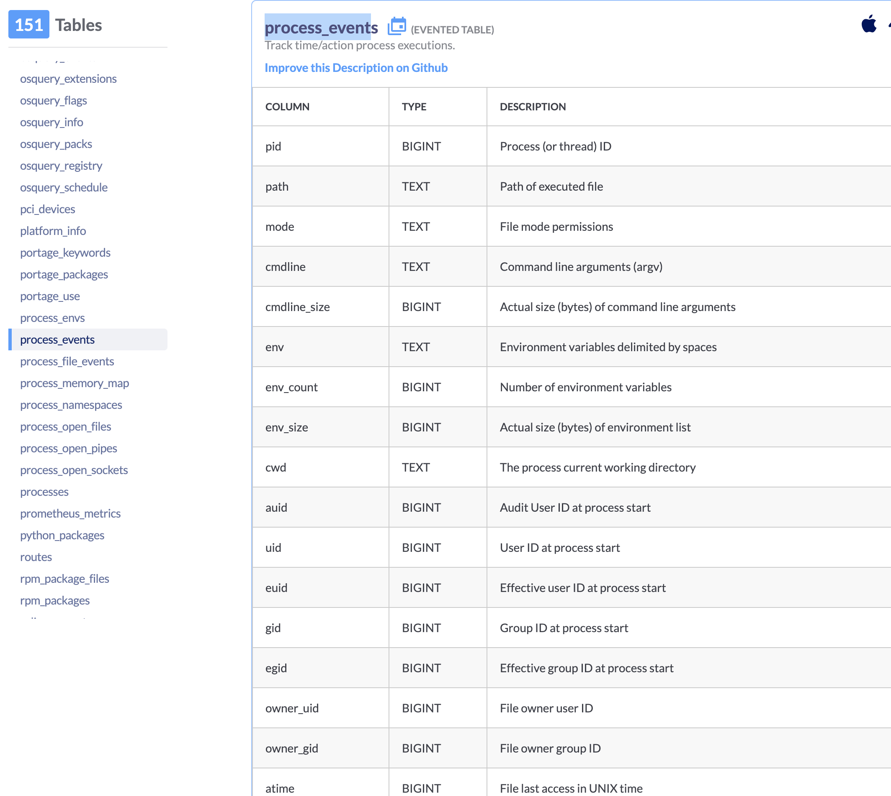
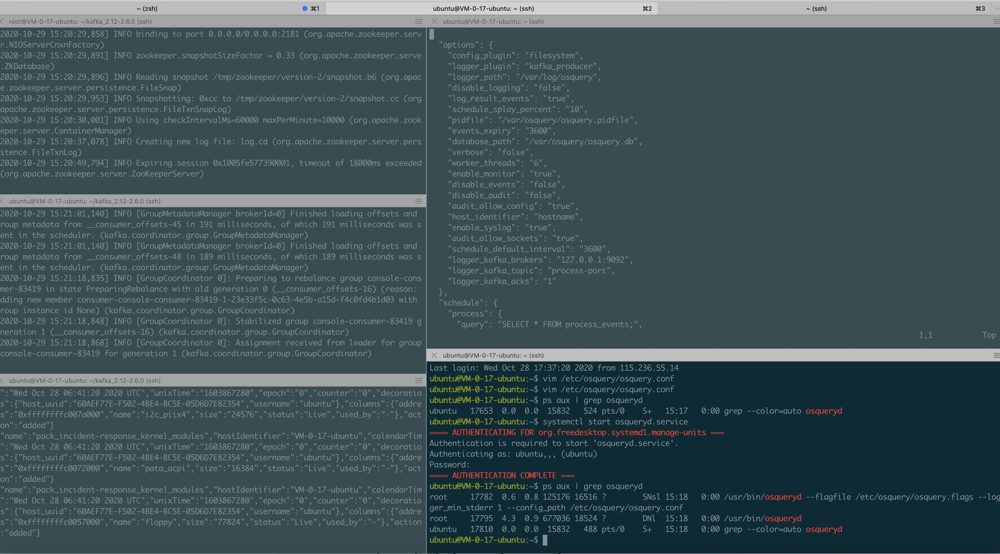
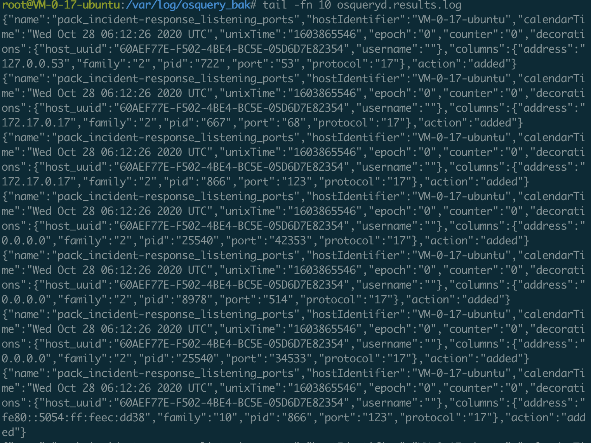
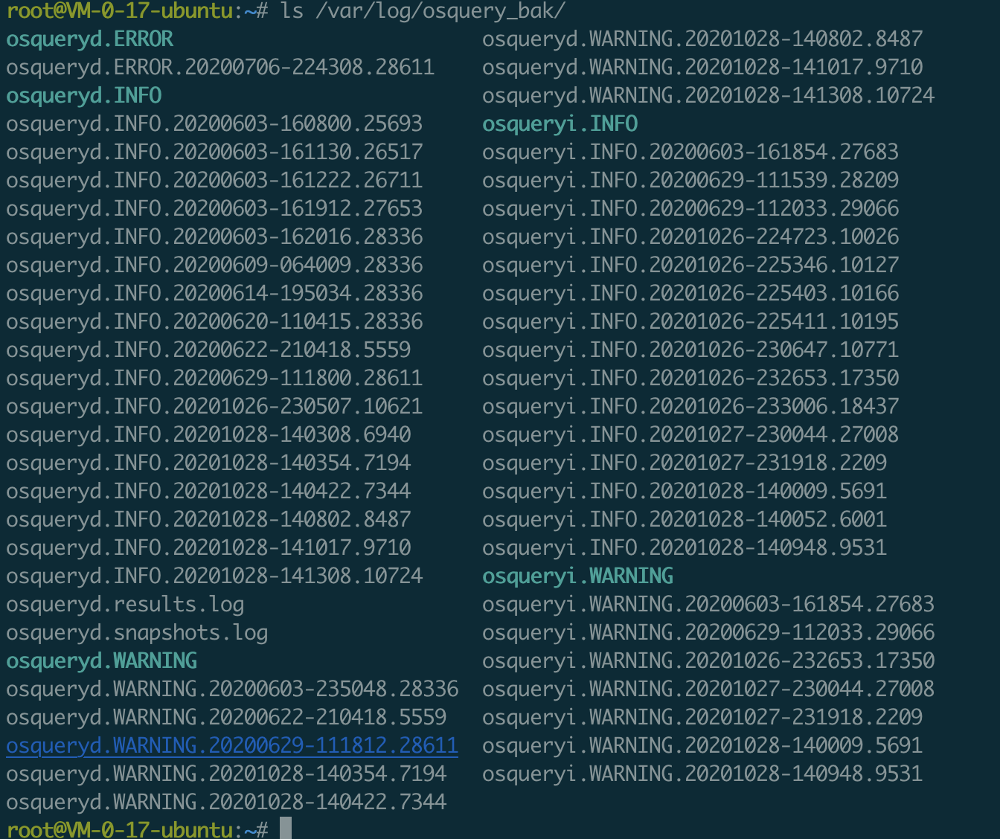

一、起源
大四第一次实习期间曾在公司项目中接触过这个东西，当时还不太了解应用场景，只当成是一个查询主机信息（query os）的普通跨平台开源项目，觉得它用sql进行查询的设计方式很奇怪；第三次实习期间实验室老大手把手教着写安全模型，其中模型计算所用的数据就是osquery在vpc里采集来的，那时才对osquery这类主机数据采集的应用场景有了些了解；后来真正投身主机安全领域才慢慢了解到osquery应用场景还是挺广泛的，目前国内也有很多甲方厂商在安全建设中用直接用它来做数据采集（包括一些知名厂子），而此项目之所以受到甲方安全欢迎，很大程度上包含以下几点原因：
1、轮子
2、稳定
3、扩展
首先很多甲方安全部门可能人比较少，甚至存在一个人的安全部，直接用轮子相比从头自研工作量小踩坑少见效快，只要环境不是太过特殊，或者对安全有非常高的要求，其实没有必要定制化；其次，osquery这个项目从2014年开源起已经过去很久了，加上不那么侵入的技术选型和各种优化，它的稳定性还是有一个比较好的保障（技术特性+时间考验+大众审计+业界反馈），而稳定恰恰是甲方最关心的一点，安全不能影响业务，不能因为安全问题带来业务问题；最后，osquery功能的可扩展性也是一个点，osquery是不带server的，这使得osquery其实无法直接成为一个hids，而只能是一个数据采集框架，也是因为这点，甲方安全人员可以基于数据采集进行各种扩展和场景适配，同时osquery本身带有一些心跳监控和日志记录等较灵活的功能，甲方人员可以基于osquery本身较强和灵活的功能特点对osquery的后续做框架拼接，做消息缓存，做实时检测，做离线计算等，利用osquery良好的兼容性和稳定性在甲方特有的较大量级（百万级）资产场景下部署并完成每一台主机的细粒度监控、处置
之所以写这篇文章是因为考虑一两年两三年后可能也会去甲方也做类似的主机安全建设，所以先提前记录一波，顺带着思考一下应用场景、需求、能力、价值、架构设计等等（可能以上列举的跟真实的甲方安全需求并不完全一致，期待后续能真正参与到像美团那样量级的hids安全建设中学习一下）
二、基本使用
介绍
osquery是facebook开源的一款基于sql引擎的跨平台主机信息查询和监控框架；osquery的设计思想比较奇特，其将主机比作一个数据库，将主机产生的日志信息当成库表，支持使用sql语法对表中存储的主机日志信息进行查询；osquery支持查询的信息几乎涵盖主机产生的所有类型的日志数据，查询方式支持实时和调度，非常灵活
安装
osquery项目主页上可以进行下载，支持源码安装和安装包安装，这边在ubuntu16.04下进行源码安装：
1 | export OSQUERY_KEY=1484120AC4E9F8A1A577AEEE97A80C63C9D8B80B |
可以通过运行osqueryi查看是否安装成功
运行
osqueryi
内置命令
osqueryi和osqueryd是两个完全分离的程序，osqueryi支持用户终端界面基于sql做交互查询，osqueryd是osquery守护进程，运行后会在后台静默部署以服务形式基于配置文件采集数据，一般如果是测试可以用osqueryi，实际环境下都是用osqueryd；运行osqueryi，进入交互模式后可以先看下内置命令，这边注释都很清晰：
1 | ➜ ~ osqueryi |
比较常用的几个如下：
1 | .mode: sql查询结果的显示模式 |
sql语法
官方文档里说明了osqueryi修改自sqlite shell，所以其支持原生sqlite的sql查询语法：
1 | osqueryi is a modified version of the SQLite shell. It accepts several meta-commands, prefixed with a '.': |
表
具体支持的表的类型、结构、描述都在官网有说明，文档非常清晰，不得不说osquery在项目文档这块做的是真的好；带evented_table标识的表示此表事件来自于（auditd）实时收集：

osqueryd
启动
安装后自动注册systemctl：
1 | ➜ ~ systemctl status osqueryd.service |
配置
osqueryd两个配置文件路径默认都在/etc/osquery/目录下，分别为osquery.conf,osquery.flags，前者存储osqueryd运行后的一些配置，后者则为标志位存储文件，即用标志位表示程序启动时的功能启停设置，具体标志位详情见Command Line Flags；另外之前试过把osquery.flags中的内容放到osquery.conf中，效果和分开存储是一样的，就跟spoock师傅说的一样，其实osquery.conf可以说是osquery.flags的一个超集；
osquery.conf
osquery项目提供了一份配置样例：
1 | { |
其中主要包含如下几个字段：
1 | options |
options
官方文档给出的描述如下，那些不是用来控制启动配置的flags被归类为options内：
1 | Flags that do not control startup settings may be included as "options" within configuration. Essentially, any flag needed to help osquery determine and discover a configuration must be supplied via command-line arguments. Google Flags enhances this to allow flags to be set within environment variables or via a "master" flag file. |
config_plugin
配置相关的选项，默认是从本地磁盘上读取配置的，即filesystem选项，一旦配置为filesystem，则从config_path指向的路径读取配置；除了filesystem，osquery还支持tls读取配置，不过由于暂时未涉及，暂时不深入，猜测是用于集群环境下的批量配置部署：
1 | --config_plugin=filesystem |
logger_plugin
日志记录相关的配置，默认将osquery产生的日志保存在文件上（filesystem），除了本地文件存储，osquery还支持tls、syslog、kafka_producer等传输日志消息；支持多日志记录插件配置：
1 | --logger_plugin=filesystem |
日志入kafka
配置如下，具体见文档
1 | ubuntu-0-17-ubuntu:~$ cat /etc/osquery/osquery.conf |

schedule
osquery调度相关，query里是查询语句，interval代表调度周期，其它一些比较重要的可选字段如removed，snapshot等都在文档中有解释；其中snapshot这个字段比较重要，它表示查询结果是增量模式还是快照模式，若为快照模式，则输出当时查询的全量结果，若为增量模式，则每次查询只输出与上次查询有差异的部分（增量），这个要注意一下：
1 | "schedule": { |
1 | The basic scheduled query specification includes: |
decorators
decorators，为osquery查询结果增加额外的装饰器，大意就是配置装饰器将在查询前后执行装饰器内部定义的查询语句并将结果添加到osquery日志结果中去；装饰器支持几种模式，load是在每次配置加载时启动装饰器，always在schedule中的每条语句执行前运行装饰器，interval则是以调度模式启动装饰器：
1 | Decorator queries exist in osquery versions 1.7.3+ and are used to add additional "decorations" to results and snapshot logs. There are three types of decorator queries based on when and how you want the decoration data. |
目前只试过load：
1 | "decorators": { |

packs
打包好的sechdule查询语句，可以将同一类型的查询语句打包放在一个packs中，osquery项目自带了一些默认的packs集合：
1 | The above section on packs almost covers all you need to know about query packs. The specification contains a few caveats since packs are designed for distribution. Packs use the packs key, a map where the key is a pack name and the value can be either a string or a dictionary (object). When a string is used the value is passed back into the config plugin and acts as a "resource" request. |
1 | "packs": { |
/usr/share/osquery/packs/osquery-monitoring.conf
osquery自带的状态监控pack：
1 | { |
osquery.flags
基本都在CommandLineFlags中，不再详述
log
本地日志存储在/var/log/osquery/目录下，几个软链接指向的都是当前最新修改的日志文件；其中osqueryi.xxxxx和osqueryd.xxxxxx分别存储osqueryi和osqueryd的相关日志输出，前面也说过二者是分离的；error存储osquery运行过程中的一些报错日志，warn存储告警日志，info存储运行日志，results.log存储增量日志，snapshot存储快照日志，具体放在哪个文件里由前面的配置决定：

1 | Snapshot logs |
1 | The osquery daemon uses a default filesystem logger plugin. Like the config, output from the filesystem plugin is written as JSON. Results from the query schedule are written to /var/log/osquery/osqueryd.results.log. |
三、问题
之前玩osquery的时候遇到过一些问题，记录一下：
1、auditd占用
用户态的原生的auditd应用在osqueryd启动时应该kill掉，由osquery自实现audit系统接管netlink，否则可能会因为netlink占用问题起冲突，一些由内核kauditd捕获的实时事件无法通过netlink传输到osquery audit审计系统，从而导致部分走auditd获取数据的表的sql查询输出为空，相关问题其实文档里已经有说明了，当时记得折腾了半天：
1 | On Linux, osquery uses the Audit system to collect and process audit events from the kernel. It accomplishes this by monitoring the execve() syscall. auditd should not be running when using osquery's process auditing, as it will conflict with osqueryd over access to the audit netlink socket. You should also ensure auditd is not configured to start at boot. |
2、osqueryi和osqueryd同时运行
osqueryi和osqueryd若同时运行，先运行者会占用后运行者的auditd数据传输通道，从而导致只有前者能获取到数据而后者无法获取到
3.etc.
后续有发现继续记录
四、总结
针对osquery的使用结合自身的一些经历做了一个比较粗糙的分析，后续在使用上有了新的发现将继续在此篇进行补充，另外不得不提一下osquery的文档做的是真的好，细节说明非常清晰，各种配置、参数、使用方式、问题等都能在文档中找到，之后将继续对文档深入学习；随着对osquery的慢慢熟悉，后续将进行较深入一点的架构层次上的学习与分析；osquery相关的文章国内研究输出的好像不是非常多，这边都是参考spoock师傅的教程，写的是真的好，受益匪浅